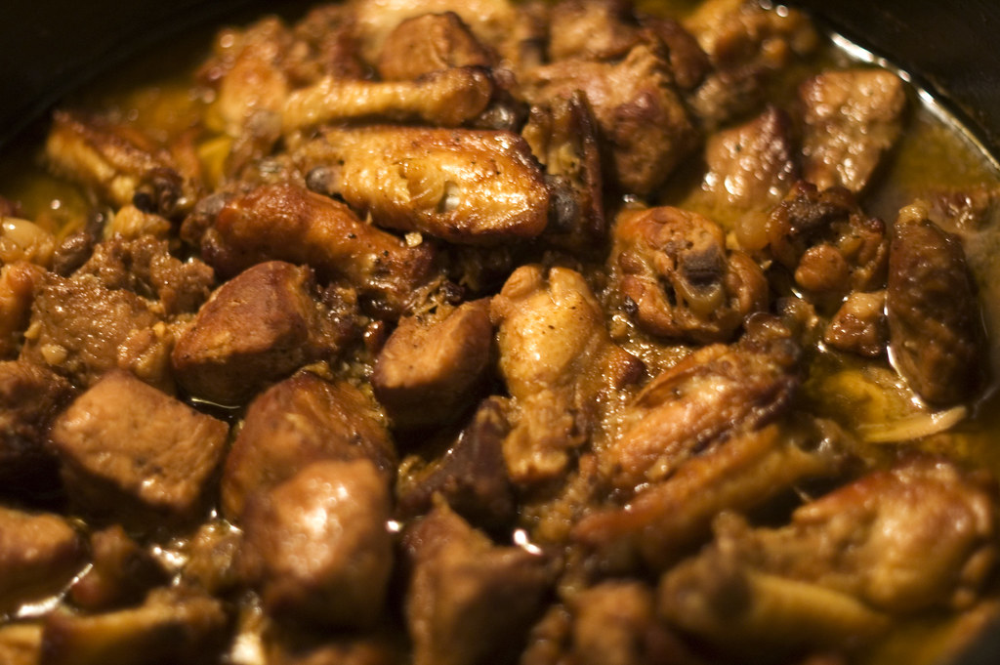

Pork Adobo is a dish wherein pork is simmered in soy sauce and vinegar. This is considered as a favorite in Filipino households
It's a dish comprised of pork chunks braised in garlic-soy flavoured liquid that reduces down into an intense flavoured glaze-like sauce